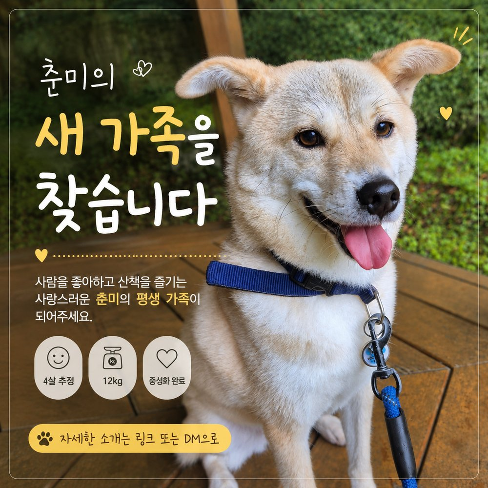

경기 광주에서 지내고 있습니다.
충분히 이야기 나눈 뒤 천천히 결정하셔도 괜찮습니다.
춘미는 시골에서 좋지 않은 환경에 놓여 있다가 구조된 아이입니다. 구조자분과 인연이 닿아 임시보호로 저희 가족과 함께하게 되었고, 입양처를 찾지 못한 채 어느새 약 2년을 함께 지냈습니다.
가족처럼 지내왔지만 생활환경의 변화로 춘미에게 더 적합한 가정을 찾아주는 것이 좋겠다고 판단해 새로운 가족을 찾고 있습니다.
구조 당시 식용 목적으로 길러졌을 가능성이 있다고 전달받았습니다.
| 이름 / 나이 | 춘미 / 4살 추정 |
|---|---|
| 견종 / 성별 | 시바·진도계 믹스 추정 / 암컷 |
| 체중 | 약 12kg |
| 중성화 | 완료 |
| 예방접종 | 2차 접종 완료 |
| 건강 | 4DX 검사 정상 |
| 동물등록 | 내장칩 삽입 완료 입양 확정 후 새 보호자 명의로 등록 및 소유자 변경 |
| 성격 | 사람에게 순한 편, 처음 보는 사람에게는 약간 낯가림이 있습니다 |
| 짖음 / 분리불안 | 헛짖음 거의 없음 / 분리불안 없음 |
| 식성 | 아주 좋음 |
| 배변 | 실외배변 |
| 산책 | 하루 2회 정도 필요합니다 (비·눈이 와도 나가야 합니다) |
| 어린아이 | 어린아이가 적극적으로 만지려고 하는 상황은 불편해하는 편입니다. 영유아가 없는 가정, 또는 아이와 춘미의 공간을 충분히 분리할 수 있는 가정을 선호합니다. |